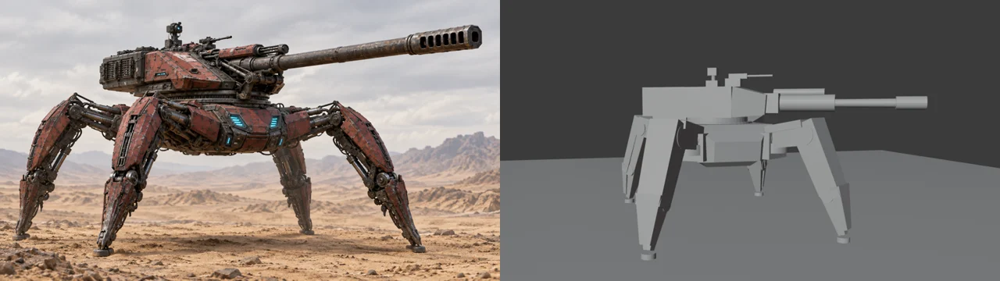
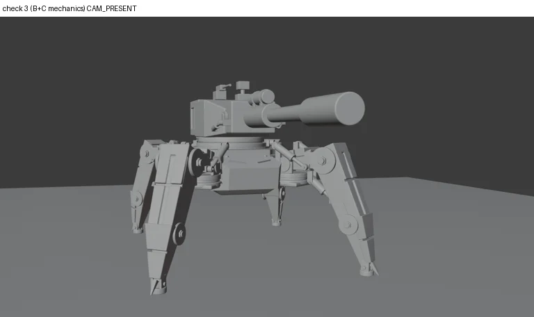
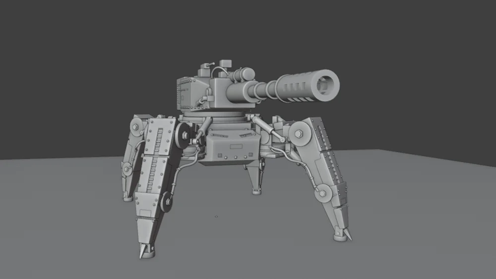
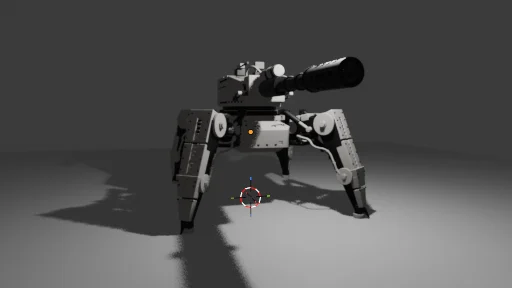
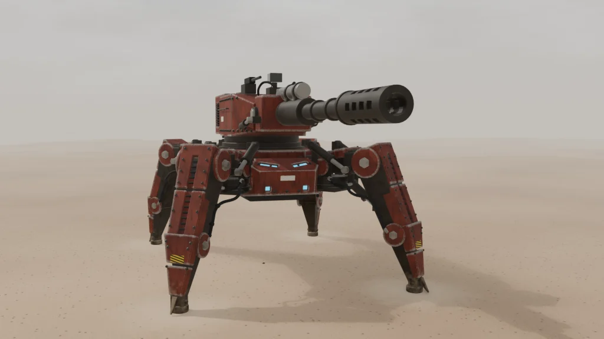
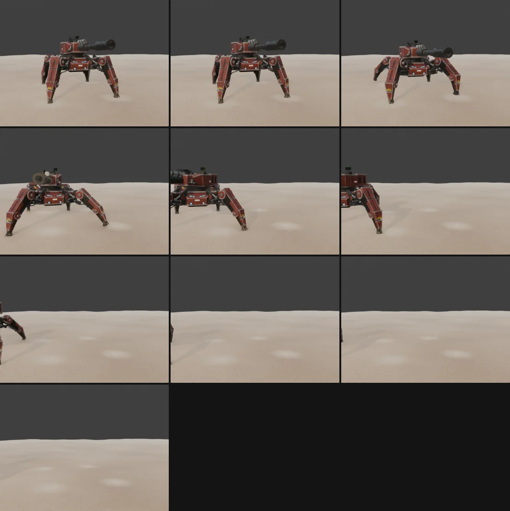
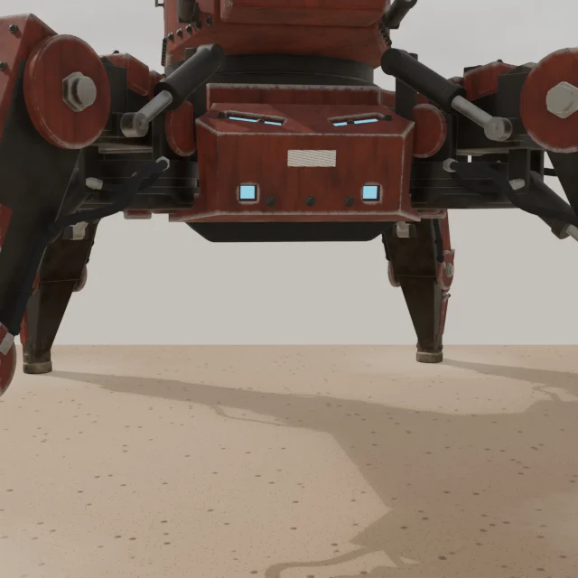
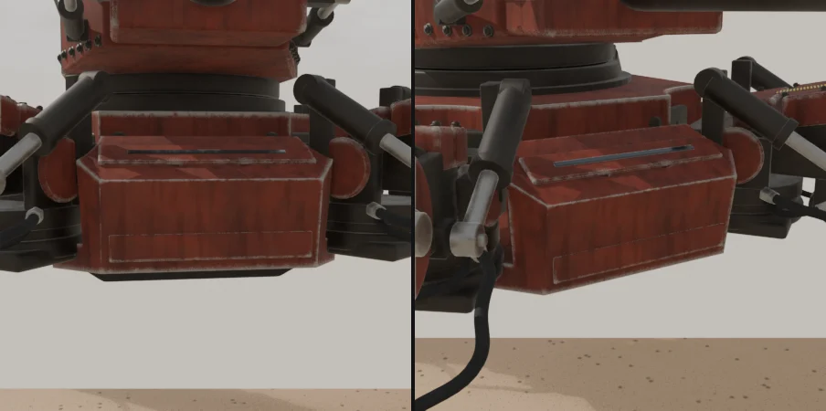
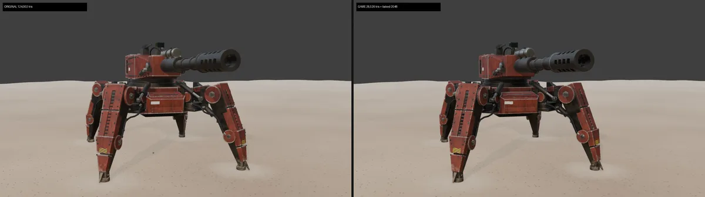
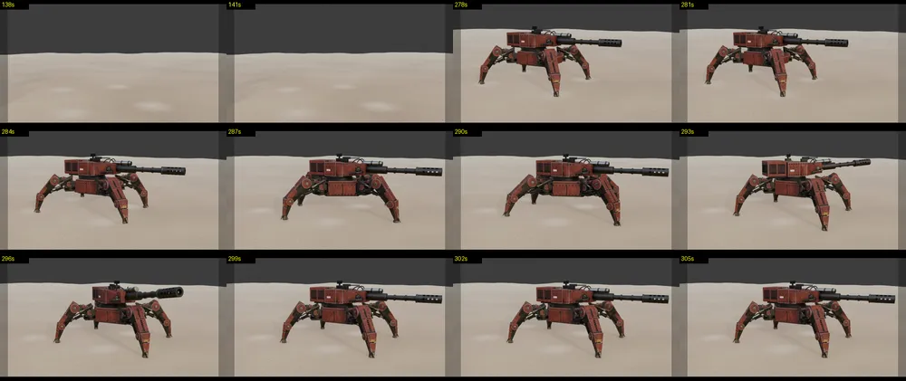

거미 포탑
Claude Opus 5.5가 Blender MCP로 Blender 5.2를 직접 조작해 만든 사족 보행 포탑입니다. 사람은 레퍼런스 이미지 2장과 단계별 프롬프트를 주고, 모델링·재질·리깅·걷기 애니메이션은 Claude Opus 5.5가 도구 호출로 한 단계씩 만들었습니다. 그 뒤 같은 모델을 Unity용 게임 에셋으로 바꿨습니다(S6).

단계
블로킹·주 장갑
설계 시트를 픽셀로 재서 비율표를 만들고, 덩어리부터 레퍼런스 부피로 맞췄습니다. 첫 시도는 다리가 가는 막대처럼 보여 다시 했습니다.

2차 형상·기계 구조
패널 나눔, 엉덩이 요 베어링, 엉덩이·무릎 피스톤. 관절 겹침은 실제로 회전시켜 충돌 검사로 확인했습니다.

디테일·케이블
볼트는 면 인스턴스로, 제퇴기 구멍과 해치·그릴, 다리 호스와 클램프를 더했습니다. 호스 19개 모두 장갑을 관통하지 않습니다.

재질·조명·사막
점토 → 건메탈 → 산화 적색 장갑 → 검정 인서트 → 피스톤 금속 → 마모 순서로 재질을 하나씩 공개했습니다. EEVEE 뷰포트만 씁니다.


리그·걷기·퇴장
뼈 68개, 다리마다 IK. 대각 보행으로 걸어 9.5초에 화면 밖으로 나갑니다. 전면이 얼굴처럼 보인다는 의견을 받아 발광 렌즈와 V자 슬릿을 바꿨습니다.



게임 에셋
녹화용 모델(124,002 삼각형)을 Unity용 28,526 삼각형으로 줄이고, 볼트·표식은 2048 텍스처 4장으로 구웠습니다. 제약으로 움직이던 리그는 키프레임으로 구워 액션 5개(Idle·Walk·Turn L/R·Fire)를 만들었고, 포탑 선회·포신 고각은 엔진이 따로 돌립니다. 걷기 1.2m/s·회전 20°/s는 실측한 관절 충돌 한계 안에서 골랐습니다.


사용 도구
- Blender 5.2 — 작업 과정은 EEVEE 뷰포트 녹화, 영상 첫 걷기 장면만 EEVEE로 다시 렌더
- Blender MCP — Claude가 Blender를 조작하는 연결
- Claude Opus 5.5 (Claude Code) — 단계마다 새 세션, 끊기면 진행 파일로 이어 감
- VARCO 3D — 레퍼런스 이미지 2장(hero 렌더, 설계 시트)
- OBS Studio·ffmpeg — 녹화, Claude가 생각하며 멈춘 구간 자르기